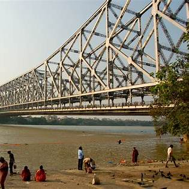
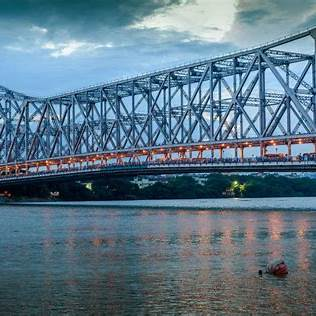
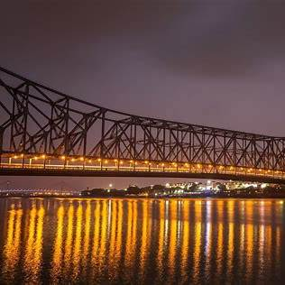
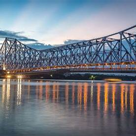

About Howrah Bridge




The Howrah Bridge, officially known as Rabindra Setu, is a renowned cantilever bridge spanning the Hooghly River in Kolkata, India. Commissioned in 1943, it stands as a testament to the city's rich history and engineering prowess.
Historical Significance: Originally named the New Howrah Bridge, it replaced a pontoon bridge that previously connected Kolkata and Howrah. In 1965, it was renamed Rabindra Setu in honor of the Nobel laureate Rabindranath Tagore.
Design and Structure: As the sixth-longest cantilever bridge globally, the Howrah Bridge features a balanced steel structure with a central span of 1,500 feet. It is 705 meters long, 21.6 meters wide, and stands 82 meters above the river, allowing ships to pass beneath.
Traffic and Usage: The bridge accommodates approximately 100,000 vehicles and over 150,000 pedestrians daily, making it one of the busiest cantilever bridges worldwide.
Visiting Tips:
Best Time to Visit: Early morning or late evening offers a serene experience with fewer crowds.
Photography: While photography is allowed, avoid using professional equipment without prior permission.
Safety: Pedestrian pathways are available; exercise caution due to heavy traffic.
Details
Location : Kolkata, West Bengal, India, on the Hooghly River.